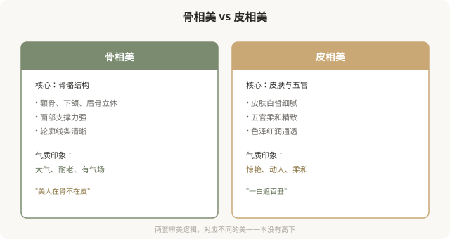
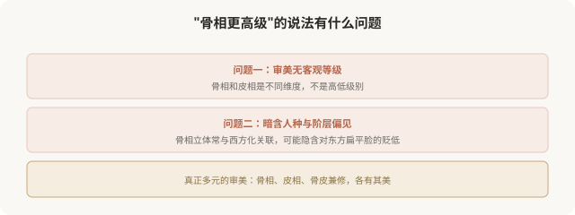

先说结论：骨相美与皮相美，是东方（尤其中国、日本）审美里两套底层的、常被对举的美学逻辑。骨相美强调骨骼结构，颧骨、下颌、眉骨的立体与支撑，被认为“耐老”“有气场”；皮相美强调皮肤、五官、色泽，白皙、细腻、柔和，被认为“惊艳”“动人”。两者各有审美价值，没有客观高下，但“骨相 > 皮相”的说法常暗含新的审美等级，值得看清。
骨相美与皮相美的区别

“骨相美”为什么被推崇
近年来，“骨相美”常被赋予更高评价，原因有几个：
- “耐老”叙事：骨骼支撑好的人，软组织下垂慢，被认为“经得起时间”。这契合抗老焦虑。
- “高级”关联：骨相美常与高级脸、超模脸关联，带有阶层与品味暗示。
- 对“皮相美”的反拨：在过度填充、滤镜审美泛滥后，骨相的“真实结构感”被重新推崇。
- 摄影表现力：骨相分明的人上镜，适合时尚和影视语境。
这些原因有一定道理，但“骨相 > 皮相”的结论，本身是一种审美等级制。
“骨相 > 皮相”的问题

需要警惕的是：当“骨相美”被神化，它可能变成对扁平脸、圆脸、皮相型面孔的贬低，而这恰恰是很多东方人天然的面部特征。推崇骨相到极端，可能变成一种自我东方主义的审美，用西方立体标准否定东方面部特征。
医美如何“实现”两者
| 审美方向 | 医美手段 | 风险提示 |
|---|---|---|
| 骨相美 | 骨骼手术（颧骨、下颌、鼻基底）、填充塑形 | 骨骼手术不可逆，慎重 |
| 皮相美 | 皮肤管理（光电、刷酸、注射）、五官精修 | 相对可逆，但过度也会不自然 |
| 骨皮兼修 | 综合方案，先结构后肤质 | 整体协调最重要 |
骨相美的“实现”往往涉及不可逆的骨骼手术，这是最大的风险。冲着“骨相美”做削骨、截骨，潮流变化和并发症风险都要充分考量。
一个更深的问题
“骨相美”的流行，背后是对“耐老”和“高级”的双重欲望，既想美，又想美得久；既想美，又想美得有阶层感。这种欲望本身没有错，但当它被包装成“骨相才是真美”时，就窄化了审美。
真正的事实是：骨相和皮相是面部的两个维度，绝大多数人两者兼有，只是比例不同。一张面孔的美，是骨骼结构、皮肤状态、五官形态、气质神态综合作用的结果，把它简化成“骨相 vs 皮相”的对立，本身就是对美的窄化。
如何清醒地看待骨相 vs 皮相
- 两者没有高下：骨相不比皮相高级，皮相也不比骨相浅薄。
- 不必非此即彼：绝大多数人是混合型，追求协调即可。
- 警惕审美等级化：任何“X 才是真美”的说法，都是一种规训。
- 警惕人种偏见：推崇骨相立体时，反思是否在否定自己的天然特征。
- 不可逆慎重：为追求骨相做骨骼手术，风险与潮流变化都要考量。
一个反思
骨相美和皮相美的对举，本身是东方审美的丰富之处，它承认美的多种维度。但当其中一种被神化为“高级”，丰富就变成了新的单一。真正欣赏东方审美，是允许骨相、皮相、兼修型各有其美，而不是确立一种新的“正确脸”。你的脸不必非“骨相”或“皮相”，它可以是协调的、属于你自己的样子。
本文用于健康教育与文化反思，不构成对任何审美选择的否定；具体医美决策须结合个体情况与具备资质的医师面诊。